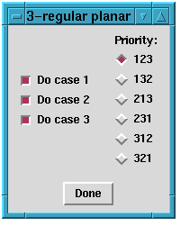

Up : Main
Prev : Generation programs
Next : Input file
CaGe V0.3
CPF
CPF is a program which generates 3--regular planar maps with given
face sizes. Interpreted as molecules, each vertex is a carbon atom. Each
atom has bonds to exactly three other atoms. The face sizes are the sizes of
the carbon rings. One special case is where only pentagons and hexagons are
allowed. Those molecules are exactly the fullerenes (which can be generated
more efficiently by using fullgen).
Basic options: Note that there are two windows which include basic
options. In the well--known window including the output options you can
choose the minimum and maximum number of vertices.
The number of vertices can be selected by two sliders named "Minimal number
of vertices" and "Maximal number of vertices". If the
"Min=Max"--checkbutton is not switched on, then these two sliders can have
different values.
In the other window you can choose the allowed face sizes. All allowed face
sizes are listed inside the frame named "Face sizes to be included". For
every face size there is a checkbutton named "Limits". If you switch on this
checkbutton, then two sliders appear. With these sliders you determine
how many faces with the related size must appear at least and at most in every
generated map. Of course the minimum cannot be bigger than the maximum. If the
"Limit"--checkbutton is not switched on, then no limits will be assumed.
This means also that CPF might generate maps where the related face
size will not appear at all.
In the frame named "Selected face size" there is a slider which you can use
to choose a face size. If this face size is already included into the list of
allowed face sizes, then you can reject it from the list by clicking the
button "Discard face size". If the face size is not yet in the list of
allowed face sizes, then you can include it by clicking the button
"Include face size". In each case exactly one of the two buttons appears.
Output options: See section
fullgen
.
Extra options: The following options are options which are rarely
used. Some of them are so specific that you must know about the details of the
generation program CPF. Such options are not explained in detail.
Instead the related option which you would have to use for a direct call of
CPF is provided. It is enclosed in brackets "{" and "}".
For a further description of such an option see the original manual of
CPF.
Use alternative ECC: {alt} If this checkbutton is switched on, then
the algorithm for the generation is slightly changed. In most cases, this
alternative algorithm will do worse (i.e. it needs more time and memory). But
if both hexagons and another face size with more than 6 vertices are allowed
without limits, then the alternative algorithm might do better.
Pathface maximal: {pathface_max} For normal use this option is
completely unimportant.
Dual output: If this checkbutton is switched on, then every generated
fullerene is dualized before it is read by CaGe, i.e. every vertex becomes
a face and every face becomes a vertex. The result of such a dualization is a
triangulation. If you use the dual output, you should restrict the generation
to 3--connected maps (see extra option "Connectivity filter").
Face statistics: {facestat} If this checkbutton is switched on,
then some
additional information about the number of generated maps with certain face
sizes is written into the logfile.
Patch statistics: {patchstat} If this checkbutton is switched on,
then some additional information is written into the logfile.
Select cases and priority:
{no_1, no_2, no_3, priority}
The generation of 3--regular planar maps can be split into
three disjoint parts (cases). By default, all cases are considered. If you
click the "Select cases and priority"--button, another window appears where
you can switch off cases.

Furthermore, you can change the priority but this
will not be explained here since for normal use the priority is completely
unimportant. By clicking "Done" you close the window. The chosen cases
and the priority remain valid. If you have changed the default values, the
"Select cases and priority"--button will be highlighted.
Connectivity filter:
{con} If you click this button another window
appears where you can choose the connectivity of the generated maps.
The connectivity is the minimum number of vertices which must be rejected to split
a map into two or more parts. For chemical purposes, only 3--connected maps
are interesting. Furthermore, the 2D and 3D representations of 1- or
2--connected maps look strange. By clicking "Done" you close the window.
The chosen connectivities remain valid. If you have changed the default values,
then the "Connectivity filter"--button will be highlighted. Note that
restricting the connectivity will not speed up the generation. It is only a
filter.